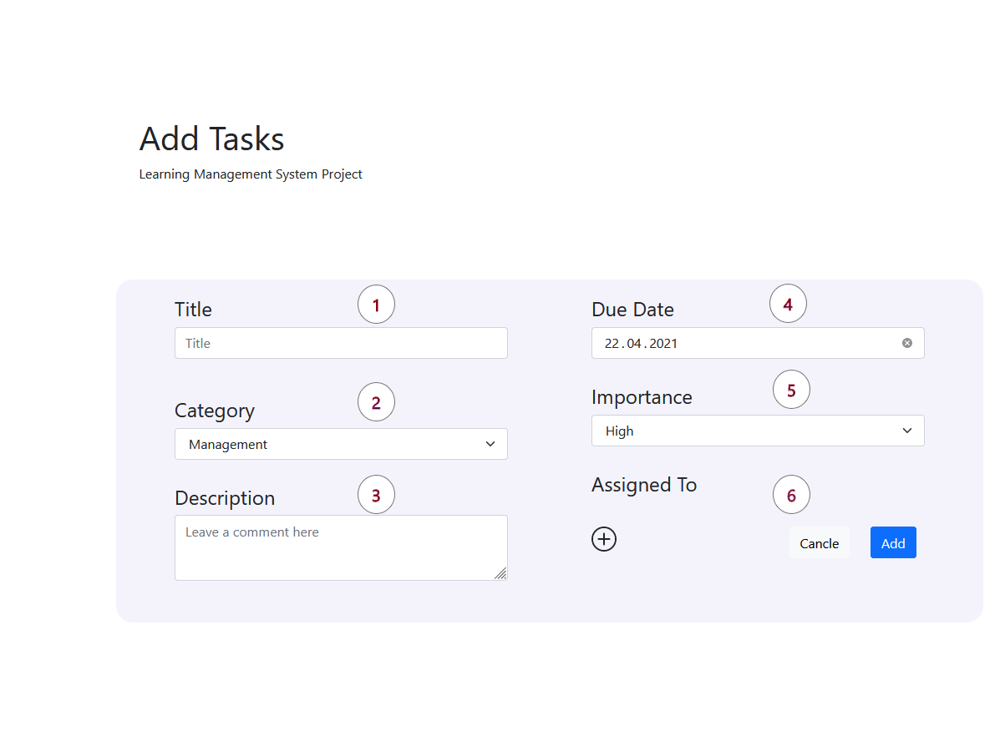
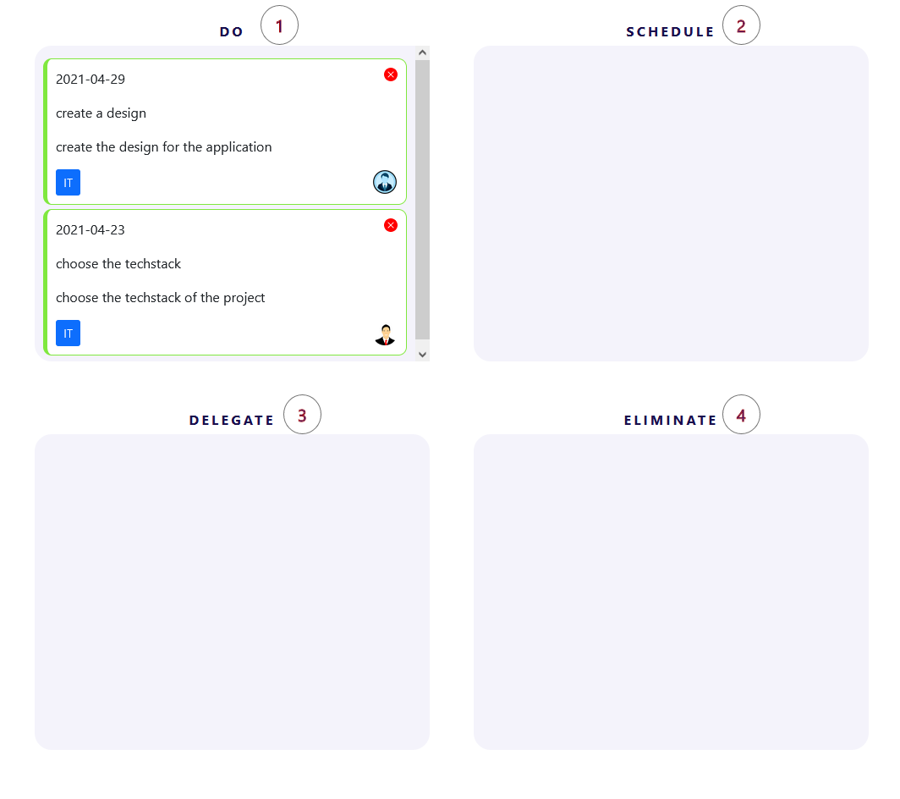
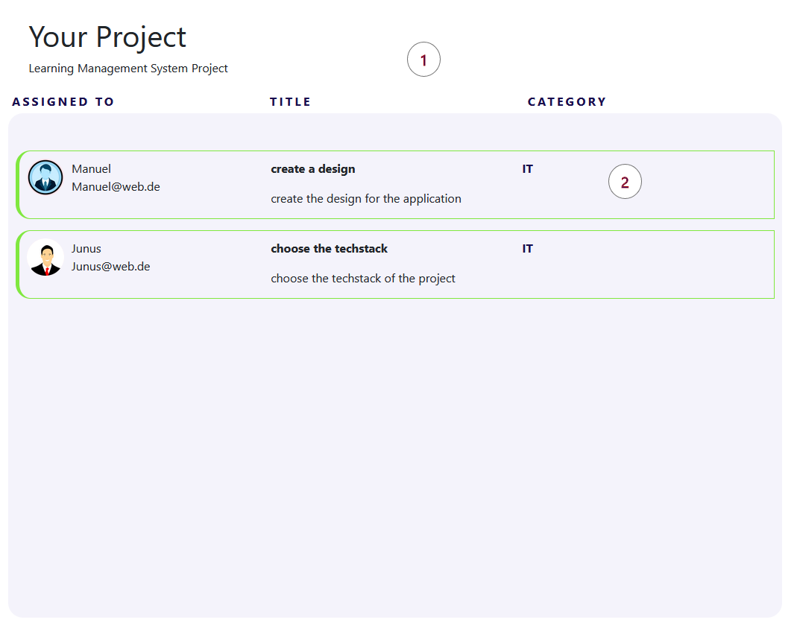

How to add a new Task ?
1. In this section you can enter the title of your new task.
2. add the department which is responsible
3. In this section you can describe the task in more detail.
4. choose the due date
5. Here you can choose if your task is of "High" or "Low" "Importance".
6. Press the to assign users to your task. You can select several. The task will be displayed in each users list and matrix.
7. Press the button to create the task. It is now displayed in your list and matrix. Please fill in each field to enable the create-button. Use the cancel button to clear all fields.
How you can use the Matrix?
1. All task you have to do sort to "Do"
2. if the task not realy important you can do later so you can "Schedule" it
3. You can move tasks to "Delegate" that should be done by colleagues or other team members.
4. Drag all Tasks to "Eliminate" that should not be done or are no longer relevant.
How does the List work?
1. Each task you create is listed here. Below you can see the assigned persons, the category and the details.
2. every listitem contains your propertys you´ve set at the beginning